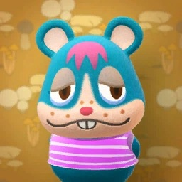
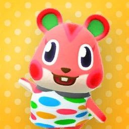
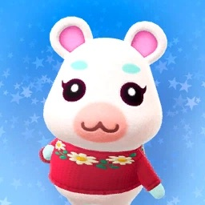
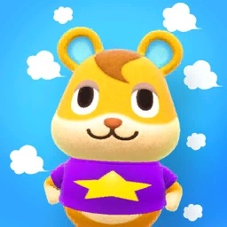
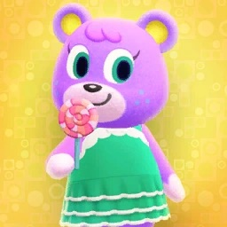

My Favorite Animal Crossing Villagers
Personalities
There are different personalities and characteristics found in villagers. Different personalities will offer the player different DIY recipes. There are eight different types:
- Lazy
- Jock
- Cranky
- Smug
- Normal
- Peppy
- Snooty
- Big Sister
Complete Villagers List
What villagers do I have on my island?
The maximum number of villagers can have living on your island is 10. The first three are completely random, but they have three different personalities. The rest of the villagers can be obtained by traveling with Nook Tickets or Amiibos.
My villagers (from oldest to last)
-
1. Rodney (Smug)  -
2. Tia (Normal) -
3.Maple (Normal) -
4.Apple (Peppy)  -
5.Fauna (Normal) -
6.Flurry (Normal)  -
7.Ione (Normal) -
8.Hamlet (Jock)  -
9.Bones (Lazy) -
10.Megan (Big Sister) 